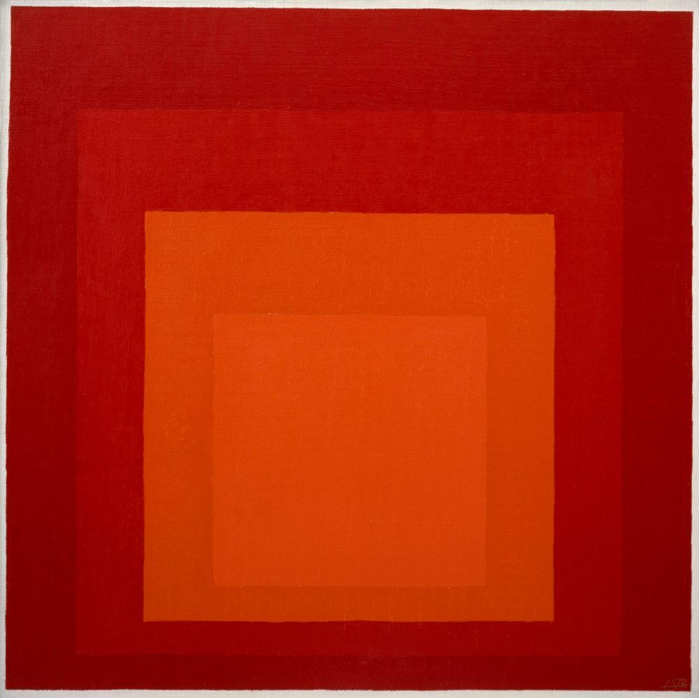
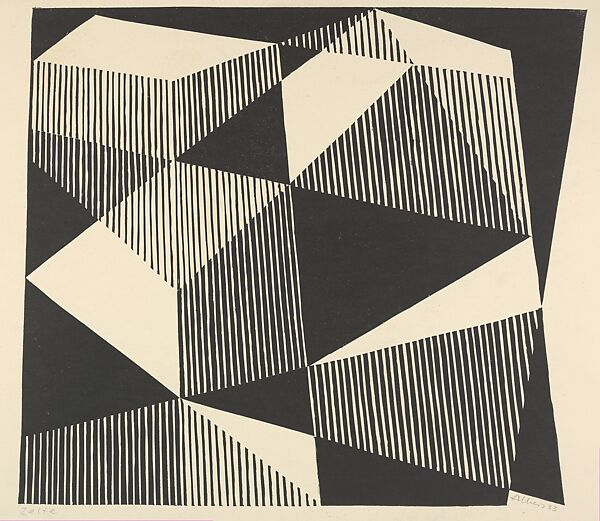

1920
Began Bauhaus studies
Began Bauhaus studies
1923-1932
Taught at Bauhaus
Taught at Bauhaus
1933
Taught Black Mountain College
Taught Black Mountain College
1939
Became American citizen
Became American citizen

1948
Directed Black Mountain College
Directed Black Mountain College
1950
Directed Yale Design
Directed Yale Design

1963
Published "Interaction of Color"
Published "Interaction of Color"

1976
Died New Haven, USA
Died New Haven, USA
